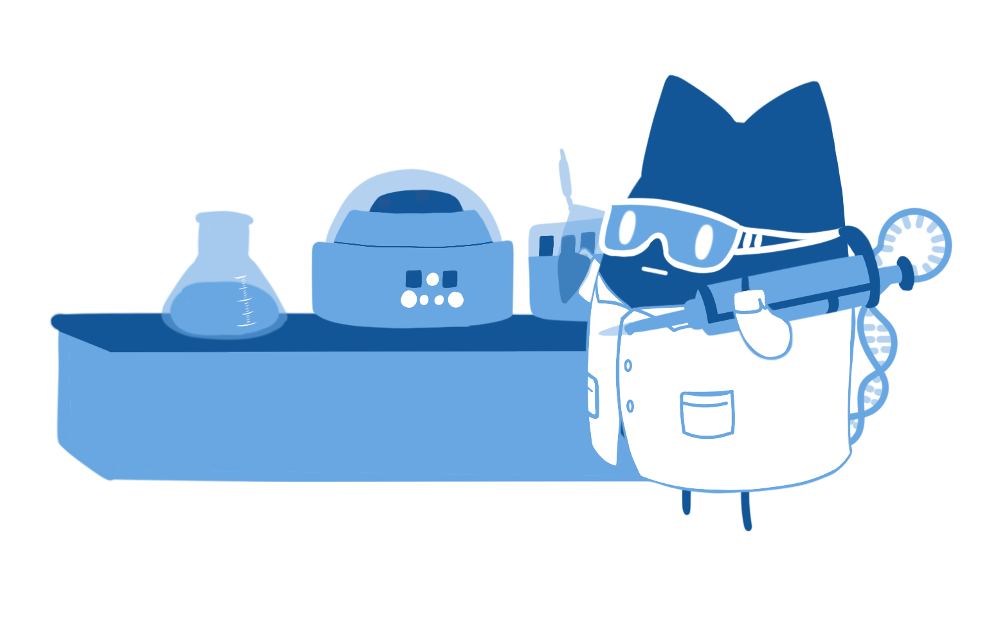

- Project
- Method
- Result
- Safety
- Team
- Data and Records
Improving the Sensitivity and Specificity of CRISPR-Cas System by Directed Evolution and Rational Design
CRISPR/Cas system is a powerful technology, functioning as a nucleic acid-based adaptive immune system
of bacteria and archaea against viruses or plasmids invasion. The discovery of this system has
revolutionized the development of molecular biology, with lucrative applications in medicine and
biotechnology.
Cas nucleases with trans-cleavage activity are more widely used in nucleic acid detection,
represented by Cas12a. However, the specificity of Cas12a for single-base mismatch recognition is
not high, which hinders its application in nucleic acid detection.
CRISPR-CasΦ, a small RNA-guided enzyme found uniquely in bacteriophages, achieves programmable DNA
cutting as well as genome editing with a better target recognition specificity, but its cleavage
activity is lower than that of Cas12a.
what we do?

Based on the rational design strategy, we mutated the key amino acids on the helix α7 in CasΦ protein
and introduced the hairpin-structured crRNA to construct a CRISPR-Cas system with high cleavage activity
and good target recognition specificity.
